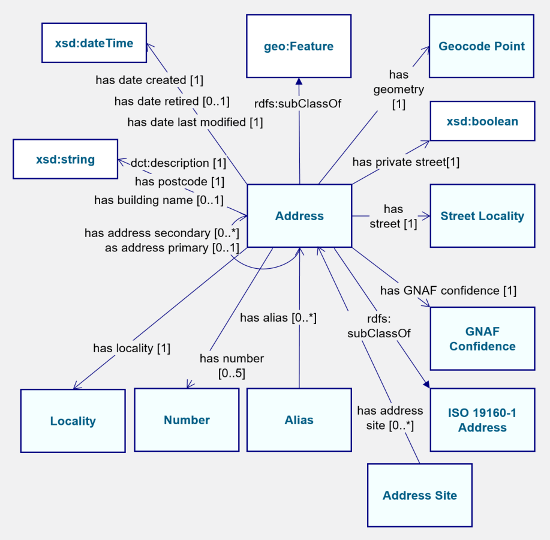
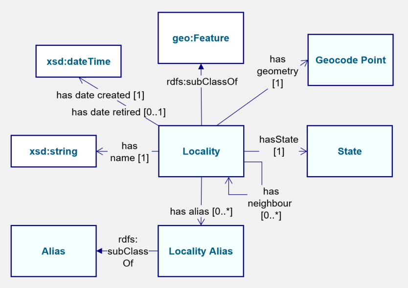
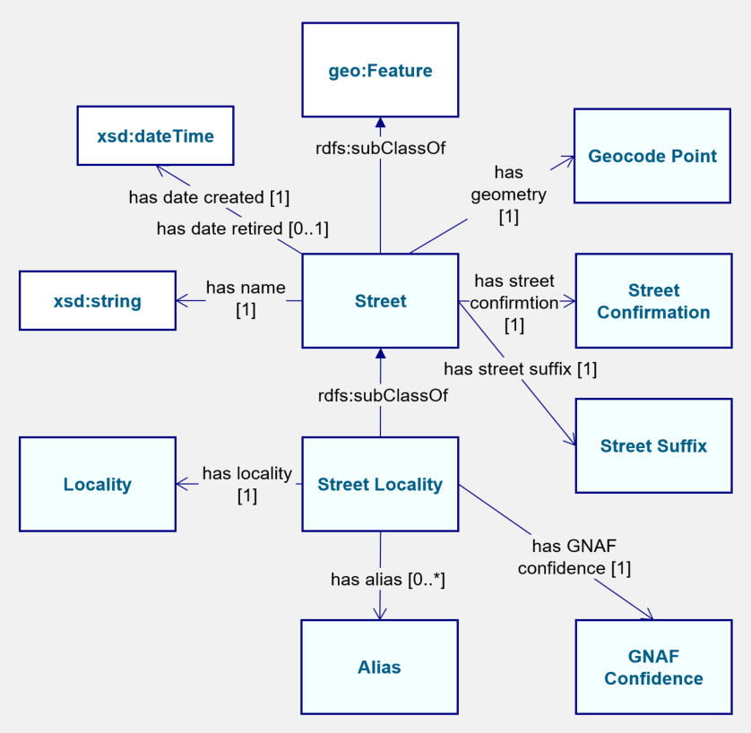

Classes
- Address
- Address Site
- Alias
- Alias Type
- Geocode
- Geocode Reliability
- Geocode Type
- GNAF Confidence
- GNAF Entity
- ISO19160-1 Address
- Locality
- Locality Alias
- Locality Class
- Number
- Number Type
- State
- Street
- Street Class
- Street Locality
- Street Suffix
- Street Type
Addressc back to ToC or Class ToC
IRI: http://gnafld.net/def/gnaf#Address
- has super-classes
- locationc
- GNAF Entityc
- ISO19160-1 Addressc
- location
- has numberop some Numberc
- has aliasop some Aliasc
- has geocodeop exactly 1 Geocodec
- has address siteop some Address Sitec
- has building namedp max 1
- has localityop exactly 1 Localityc
- has street localityop exactly 1 Street Localityc
- has GNAF confidenceop exactly 1 GNAF Confidencec
- has postcodedp exactly 1
- is in domain of
- has GNAF confidenceop, has geocodeop, has numberop, has street localityop
- is in range of
- has aliasop
Address Sitec back to ToC or Class ToC
IRI: http://gnafld.net/def/gnaf#AddressSite
- has super-classes
- GNAF Entityc
- has geocodeop some Geocodec
- has namedp exactly 1
Aliasc back to ToC or Class ToC
IRI: http://gnafld.net/def/gnaf#Alias
- has super-classes
- GNAF Entityc
- has alias typeop exactly 1 Alias Typec
- has sub-classes
- Locality Aliasc
- is in domain of
- has aliasop, has alias typeop
Alias Typec back to ToC or Class ToC
IRI: http://gnafld.net/def/gnaf#AliasType
- has super-classes
- collection
- collection
- is in range of
- has alias typeop
Geocodec back to ToC or Class ToC
IRI: http://gnafld.net/def/gnaf#Geocode
- has super-classes
- GNAF Entityc
- has geometry exactly 1 geometry
- has geocode reliabilityop exactly 1 Geocode Reliabilityc
- has geocode typeop exactly 1 Geocode Typec
- is in domain of
- has geocode typeop
- is in range of
- has geocodeop
Geocode Reliabilityc back to ToC or Class ToC
IRI: http://gnafld.net/def/gnaf#GeocodeReliability
- has super-classes
- collection
- collection
Geocode Typec back to ToC or Class ToC

IRI: http://gnafld.net/def/gnaf#GeocodeType
- has super-classes
- collection
- is in range of
- has geocode typeop
GNAF Confidencec back to ToC or Class ToC
IRI: http://gnafld.net/def/gnaf#GnafConfidence
- has super-classes
- collection
- collection
- is in range of
- has GNAF confidenceop
GNAF Entityc back to ToC or Class ToC
IRI: http://gnafld.net/def/gnaf#GnafEntity
- has super-classes
- entity
- has date createddp exactly 1
- has date retireddp max 1
- has date last modifieddp exactly 1
- has sub-classes
- Addressc, Address Sitec, Aliasc, Geocodec, Localityc, Statec, Streetc
ISO19160-1 Addressc back to ToC or Class ToC
IRI: http://reference.data.gov.au/def/ont/iso19160-1-address#Address
- has super-classes
- entity
- has sub-classes
- Addressc
Localityc back to ToC or Class ToC
IRI: http://gnafld.net/def/gnaf#Locality
- has super-classes
- locationc
- GNAF Entityc
- location
- has locality classop exactly 1 Locality Classc
- has neighbourop some Localityc
- has aliasop some Locality Aliasc
- has geocodeop max 1 Geocodec
- has primary postcodedp exactly 1
- eh inside exactly 1 Statec
- has namedp exactly 1
- is in domain of
- has locality classop, has neighbourop, has primary postcodedp
- is in range of
- has aliasop, has localityop, has neighbourop
Locality Aliasc back to ToC or Class ToC
IRI: http://gnafld.net/def/gnaf#LocalityAlias
- has super-classes
- Aliasc
- has primary postcodedp exactly 1
- has namedp exactly 1
Locality Classc back to ToC or Class ToC
IRI: http://gnafld.net/def/gnaf#LocalityClass
- has super-classes
- collection
- collection
- is in range of
- has locality classop
Numberc back to ToC or Class ToC
IRI: http://gnafld.net/def/gnaf#Number
- has super-classes
- entity
- has address number typeop exactly 1 Number Typec
- is in domain of
- has address number typeop
- is in range of
- has numberop
Number Typec back to ToC or Class ToC
IRI: http://gnafld.net/def/gnaf#NumberType
- has super-classes
- collection
- collection
- is in range of
- has address number typeop
Statec back to ToC or Class ToC
IRI: http://gnafld.net/def/gnaf#State
- has super-classes
- GNAF Entityc
Streetc back to ToC or Class ToC
IRI: http://gnafld.net/def/gnaf#Street
- has super-classes
- locationc
- GNAF Entityc
- location
- has namedp exactly 1
- has street classop exactly 1 Street Classc
- has aliasop some Aliasc
- has street typeop exactly 1 Street Typec
- has street suffixop exactly 1 Street Suffixc
- has sub-classes
- Street Localityc
- is in range of
- has aliasop
Street Classc back to ToC or Class ToC
IRI: http://gnafld.net/def/gnaf#StreetClass
- has super-classes
- collection
- collection
- is in range of
- has street classop
Street Localityc back to ToC or Class ToC
IRI: http://gnafld.net/def/gnaf#StreetLocality
- has super-classes
- Streetc
- has localityop exactly 1 Localityc
- is in domain of
- has localityop, has street classop, has street suffixop, has street typeop
- is in range of
- has street localityop
Street Suffixc back to ToC or Class ToC
IRI: http://gnafld.net/def/gnaf#StreetSuffix
- has super-classes
- collection
- collection
- is in range of
- has street suffixop
Street Typec back to ToC or Class ToC
IRI: http://gnafld.net/def/gnaf#StreetType
- has super-classes
- collection
- collection
- is in range of
- has street typeop